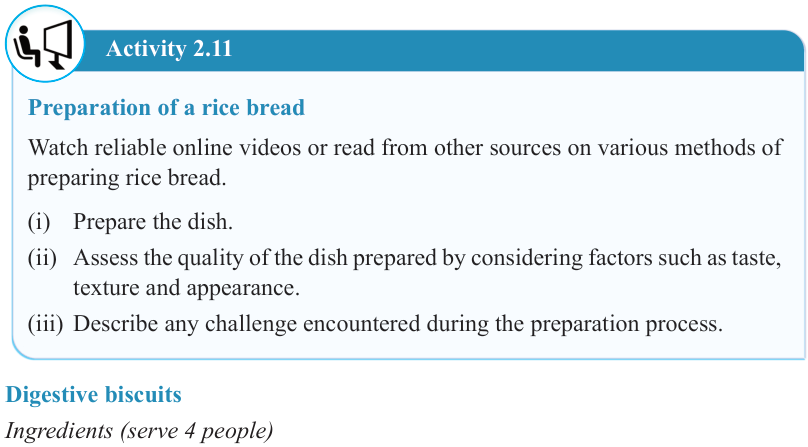

42


Food and Human Nutrition

Form Two

Activity 2.11
Preparation of a rice bread
Watch reliable online videos or read from other sources on various methods of preparing rice bread.
(i) Prepare the dish.
(ii) Assess the quality of the dish prepared by considering factors such as taste, texture and appearance.
(iii) Describe any challenge encountered during the preparation process.
Digestive biscuits
Ingredients (serve 4 people)
250 g wheat flour
3 g salt
120 g sugar
7 g baking powder
2 ml vanilla essence
120 g butter or margarine
120 ml milk
Method
1. Pre-heat the oven to 130°C.
2. Grease a baking tray.
3. Sieve the flour and baking powder into a bowl. Add salt and sugar and then mix them well.
4. Rub the butter or margarine into the mixture until it looks like breadcrumbs.
5. Add milk and vanilla essence to the mixture and knead it to obtain a stiff dough.
6. Roll out the dough thinly and cut it into desired shapes using a medium-sized biscuit cutter and then prick them.
7. Place the cut pieces in the greased baking tray and bake them at 150°C for
20 to 30 minutes until they become golden brown in colour. Remove them from the oven to cool.
8. Serve them as required.
17/09/2025 16:30